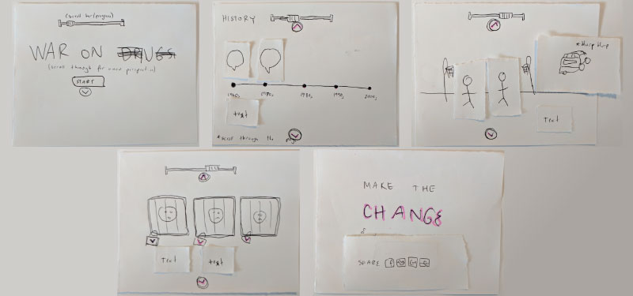
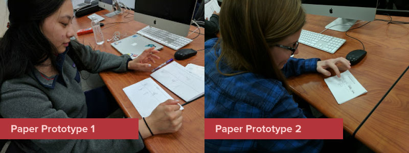

The paper prototypes that we created in class gave me valuable insight on how I can improve my project. The goal was the figure out how users would interact with the project on their own without any guidance. I learned that my initial iteration was extremely confusing. It had no clear way to navigate the site. My project is simply a scroll through a webpage with interactive elements. Because of this, I thought scrolling through the page would have sufficed as navigation. This was not the case. In my second interation, I wanted to address some of the problems that arose in the first iteration. It included more robust illustrations, more interative elements, a scroll bar, back and foward arrows, and clearer indications of what was interactive. This walkthrough produced better results and my user was able to navigate the site easier. Kaly gave me mostly positive feedback, but suggested I add a call to action at the end of my project to bring everything together.